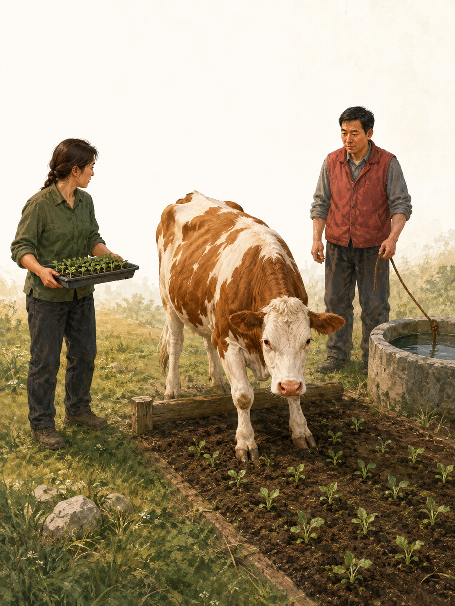
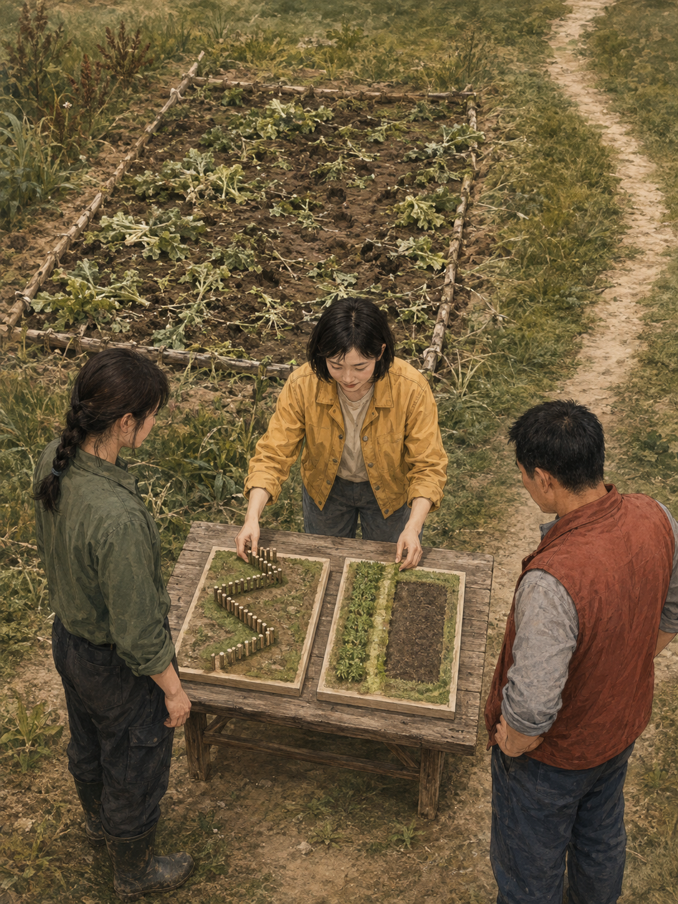
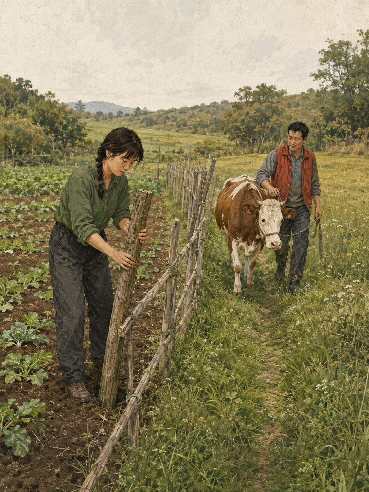
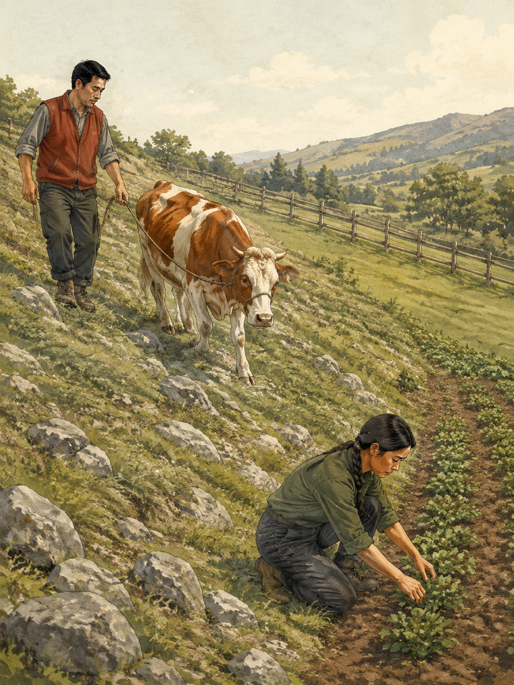
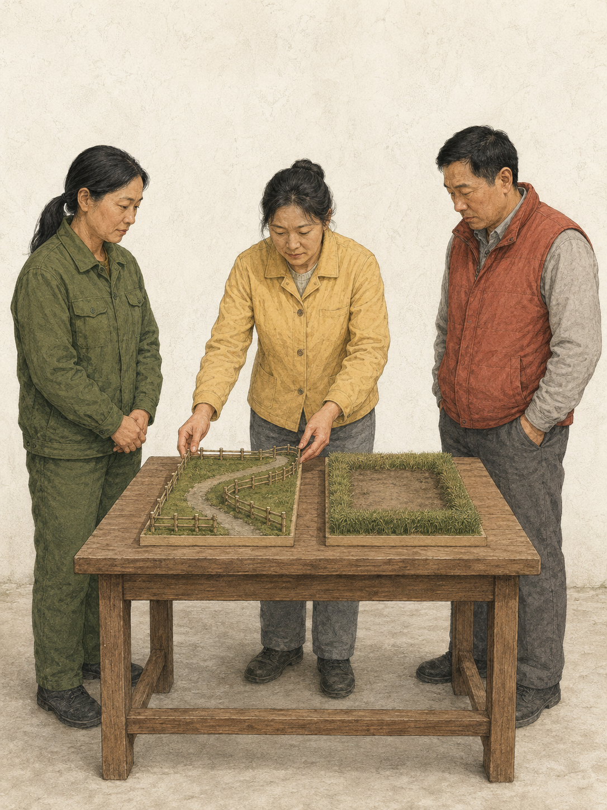
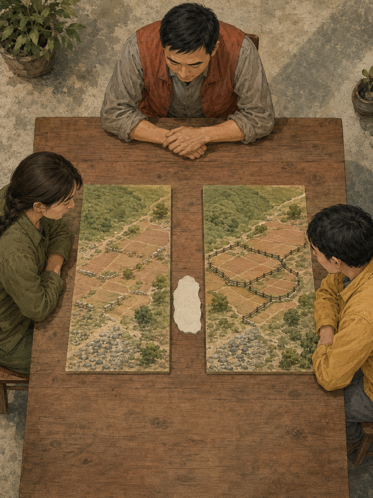
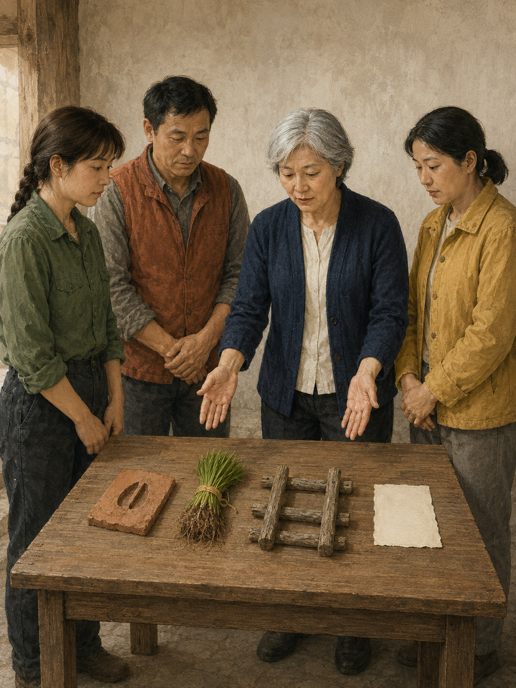

CARD 01 · 相遇
两份好意，在同一条边线上相遇
冯澜种菜，顾原赶牛去水槽；一头牛跨过低边界，菜苗被踩。善意目标还没有回答结果会怎样。
LESSON 004 · 原创情景演绎
种菜与赶牛都出于善意，却会在同一条边线上相互影响。新的安排不仅改变直接成本，也会改变参与者接下来的做法。
这是用于比较相互损害、规则成本、行为适应与基线假设的分析故事，不是现实案例复述、实证研究、现行法律判断或普遍政策结论。

CARD 01 · 相遇
冯澜种菜，顾原赶牛去水槽；一头牛跨过低边界，菜苗被踩。善意目标还没有回答结果会怎样。

CARD 02 · 候选安排
菜地受损，牛群通路也受限。苏青只摆出两种候选安排，不把任何一方直接写成答案。

CARD 03 · 成本移动
两种候选安排刚摆出，今天先把连续栅栏作为首个短期试行；顾原开始绕行，冯澜补装栅栏杆，维护与绕路成本进入观察。

CARD 04 · 行为适应
数日后连续栅栏仍在短期试行；顾原继续改走石质草坡，冯澜继续把边缘菜畦改种低矮牧草，规则改变带来持续适应。

CARD 05 · 各有牺牲
已短期试行的栅栏加绕路，与尚未试行的草带加空置菜畦并列；比较要把各自放弃的用途一起看见，不急着选赢家。

CARD 06 · 基线假设
若不试行连续栅栏，原低边界会继续保留；把这条基线与短期试行的栅栏并列比较，草带空畦仍只是未试行候选。

CARD 07 · 程序边界
蹄印、菜苗、栅栏和假设分开核对。这只是分析演示，不是实证、现行法或普遍政策结论。